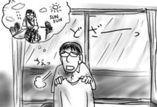
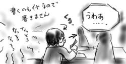
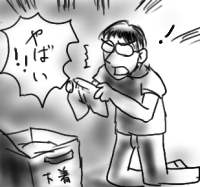
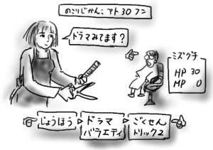
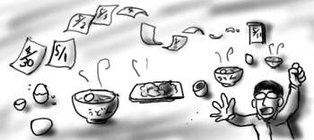

今日発売の各種コンピュータ系雑誌をいろいろ眺めていたんですが、プリントサンプルとして使用されるあの業界標準画像の、あのおばさんが、僕の心を妙に逆撫でします。このイライラ感は一体なんなんだ。
↑コレ。Web上に転がっていなかったのでデジカメで雑誌から撮影しました(スキャナもないので)。
撮影当時は若い女性だっただろうに、写真は年を取らないはずなのに、それなのにおばさん呼ばわり。時代が求める肖像の若年層化が実感できます。
風呂上がりに1リットル100円の「アロエ水」をがぶ飲むのはあまり贅沢ではありません。というか、いつからアロエってマスカット味になったんだろう。
寝るに寝られないので(寝たから)、だらだらしてたら朝日がお出迎えしてくれました。
かと言って眠くもならないので、そのまま日曜早朝アニメ特撮祭りなどを見ながら洗濯と掃除を開始。ここ数週間で珍しく日光が部屋に差し込み、新しい一日を告げます。鳥も鳴き声をあげて太陽の出現を喜んでいます。
布団をベランダに干しながら、今日は自転車で大宮方面へ遠出してみようと思い立ちました。洗濯物を干し、掃除機をかけた後は、自転車に空気を入れたりして準備はちゃくちゃくと進みます。昼ご飯に冷凍うどんを茹で、わかめとほうれん草をトッピングします。腹ごしらえをしたら、出発だ。
しかし、ふと気が付くと外は真っ暗。厚い雲が空を覆っています。絶望と言う名の雲が！急いで布団を取り込みます。乾いた洗濯物も室内へ。いくつかのシャツとジーンズの類いはまだ乾いていません。オーマイ！せめてこれらが乾くまで天気が持ちますように！と天を仰ぎ見たら速効でどしゃぶりが始まりました。ステキ休日計画、頓挫。

しかし、ステキ休日計画と言っても所詮単独行動なあたりが僕のダメさを物語っています。
今日の成果：家から一歩も出ず。
風呂上がりに買い込んであったたらみのゼリーを食すのが最高の贅沢だと思います。
うわ！！15時間くらい寝てた！
明け方に床について15時くらいに起床。食料の買い出しに出かけて帰って来て、また寝てたら日付変更一歩前でした。せっかく買い出しに行ったのに、晩飯は食わなくてもよかったみたいです。コストパフォーマンス最高！(健康パフォーマンスが最低です)
かなり冴えない休日でした。憂鬱になる。
「嫌いな食べ物はー？」「納豆！(即答)」
というわけで、僕は、今、日本で通常口にする機会がある食べ物の中で、納豆だけが食べられません。何がダメかというとあの生物的な匂いと見た目です。ネバいのは平気なんですが。そんなわけで、昼食の時も出来るだけ納豆を食べている同期の横には座らないように気をつけているんですが、今日は同期のみんなが座っている隣で、納豆おばさん×２が陣取っており、その納豆地帯と同期の間しか座れる場所がなかったのでした。座ってから気付いて、そして激しく後悔。
ちょっとずつ御飯に乗せながら食べている分にはまぁいいんですよ。また、御飯に全部乗せてしまっても茶わんを持ってばくばくとかき込んでいれば、それもまぁ許容範囲なんですよ。でも、その納豆おばさんズの一人は納豆を全部ご飯に乗せてしまった上に、なんとスプーンですくって食べているではないですか！ただでさえ見栄えの悪い納豆が表面積のあるスプーンですくわれて、見た目も最悪な感じへ。スプーンにネバネバと糸がまとわりついてるよう。
ぐんぐんと僕の食欲がなくなってくるので、なんとか納豆おばさん(二人組ユニット)を視界にいれないように不自然ぽさ丸出しで同期側ばっかりを注視してました。鼻で息をしないように飯をかきこんでいたので食べた気もしません。
分煙はどんどん進むとよいと思っていますが、分納豆は推進するほどでもないと考えてます。しかし、このような不幸があるとどうしても頭をよぎらざるを得ません。

早めに帰宅したのでTVをつけていると「あたしンち」が始まったので見る。うわ、おもろ！(頭悪い感想)
ケーキ屋店員「チョコレートショートケーキでよろしかったですかぁ？」
母「はいそう。早くしてね。」
母（なんで、よろしかったですか？なんで過去形？）
など、常々そういうこと考えてたんだよなぁというような事が的確にカタチにされていて大変おもしろく試聴しました。大地丙太郎監督らしく、おまけ(CM前とED後に入るショートショート連作など)も充実、大和田貘も実写で登場するなど中々にスリリングです。毎週見よう。
夜中に押し入れを(なぜか)ごそごそとやってたら、「PalmPilot Professional」なんていう古のデバイスを発掘してしまいました。はわわー！

今でこそPalm社が製造販売している"Palm"シリーズですが、もともとはUS Robotics社が開発した"PalmPilot"でした。3comがUS Roboticsを買収し、日本の輸入代理店が日本の限られたショップで細々と販売を開始していた時代に購入した代物で、もう5年前の話ですか。うわぁ。
この手の物好きの血が、学生というフットワーク(財布の紐)の軽さを武器に購入させたPalmPilotですが、その時の資金である奨学金は、今僕の月給から差し引かれています。当時は「未来の自分から借金だ！」と浮かれていたのですが、いざ貸す身になってみると、正直タイムマシンで問い詰めに行きたいです。お前買ったはいいけど全く使ってへんやんか(使ってなかったのかよ)。
今になって偶然発見されたのも借金のカタに過去の自分から奪って来たと解釈し(間違い)、一丁これで遊んでみることにします。今現在、所有マシンの中でPalmPilotとシンクロできるのは、シリアルポートを持っている復活Mac互換機、もしくはPowerBookDuoです。じまんのPowerBookG4はシリアルポートを持っていません(じまんになりません)。
僕はバカなので、この手のマシンとしてPSION Series5mxも所有しています(今度は使ってますよ！)。5mxのシンクロにもシリアルポートが必要で、普段は会社のWindowsマシンでシンクロしているのですが、この機会に自宅にもシンクロ環境を構築しようと思います。具体的には、PowerBookDuoにPalmPilotとのシンクロ環境を、Mac互換機に5mxとのシンクロ環境を構築します。なぜなら、PowerBookDuoは貧弱すぎて5mxのシンクロ環境はインストールできないからです。
PalmPilotのシンクロツールはフロッピーディスク4枚組で提供されており、何一つとしてディスクドライブを持たないPowerBookDuoでは直接読めません。こうなったらMac互換機でインストールフロッピーをマウントし、ディスクイメージにしてからPowerBookDuoにネット経由でムリムリと送り込むしかありません(PowerBookDuo用のethernetアダプタだけはあるので)。
しかしさすがくたびれMac互換機、立ち上げてもネットワークに繋がりません。いきなり☆トラブル(竹本泉風に)！ハブのランプもつかないっスよ(「モテたくて」風に)。しかし、何度も何度も再起動を繰り返していたら直りました。コンピュータは科学で説明がつけられないよ。
長くなってきたので詳細は省きますが、なんとかそれぞれにそれぞれのシンクロツールをインストールすることが出来ましたよ。さっそくPalmPilotに日本語化パッチことJ-OS2.0(古い)と当時インストールしていたツール類を探し出して放り込みます。いまだ当時のツールがダウンロード出来るとは思っても見なかったのでちょっと感動しました。

懐かしいマシンで遊んでいると、今はもう単なるビジネスの道具になってしまったPalmですが(SONY CLIEはまた別です)、登場した当時は開拓者的な楽しみも持てる趣味人の遊びマシンだったのになぁと一瞬そんな考えが脳をよぎりましたが、PalmPilotは、今まで多機能性や汎用性に走ってほとんど成功しなかったPDAというジャンルで、思いっきりビジネス用途の機能/アプリにしぼって開発されたことで大ブレークしたので、それはまるっきりの誤解です。
結論：だから当時も買ったはいいけど、全く使わなかったのだなぁ。
今日の日記は、ヤンマガのほのぼのエンスー漫画『ガタピシ車でいこう!!』みたいだ(違います)。そして寝不足です。なんの実にもならない！
ロンブーのは「ブラックメール」だったみたいです。興味がないのですぐ忘れます(ダメ)。
しかし今週はピンチです。何がピンチかと言うと、もちろん替えのパンツがそろそろ底を尽きそうだという点です。週末に洗濯が出来なかったのが痛かったです(秋葉に行ったりしてるからです)。
昨夜にでも洗えばよかったのですが「どうせ明日も曇り雨では」と思って洗濯しなかったところ、今日はしっかりと太陽が差していました。後悔先に立たずとはこのことです。ここ１か月ほど「五月晴れって言葉はどこへ行ったんですか？」という感想を抱きがちなくらいに曇り空が多く、目が覚めて薄暗いと舌打ちなんかをかましていた僕ですが、こうなってくると晴れでも舌打ちが出てくるわけで人間追い詰められると全部が憎くなるもんだなぁ気をつけなくちゃ。追い詰めているのはたかだかパンツですが。パンツの例えでいいことを言ってるなぁ。リサイクルだな(違います)。

ご察しの通り、あんまりネタはありません。
昨日の続きで、今日は美容院での模様をお伝えしたいと思います。今日の日記は実際にでも脳内でもFFなどのボス戦の音楽などを鳴らしながら読むと臨場感が増しすかと思います(多分)。
まず、美容院では「今日はどのようにしますか？」ということを聞いてくるのですが「切って下さい」としか言えません。店員にとってはハウダニットミステリです。最近では「…伸びた分だけ切ればいいですか？」と聞き返してくれるのでここで大きくうなずきます。最初の関門突破です。
髪を切り進んでいると、
「ドラマとか見てますか？」と店員が聞いて来ます。来た！敵の先制攻撃だ！(常に先制攻撃です)
＞じょうほう＞ドラマ＞「ごくせん」(ミズグチの攻撃) 「ごくせんは見てますよ」
「あーおもしろいですよね。来週バレますよね」(敵は油断している)
「意外と早かったですよね」(連続攻撃)
「他には火曜の○○(覚えてません)見てますよー。△△(知らない人です)が出てるやつなんですけど」(敵の攻撃！)
「あ、見てないです…」(ミズグチはダメージを受けた！)
＞じょうほう＞古いドラマ＞「トリック２」(苦し紛れの攻撃) 「ごくせんの前はトリック２見てたんですけどね。ごくせんと出演者被ってますよね」
「そうですよねー」(しかしかわした！)
「後バラエティで、地獄(悪魔？)のメールとか知ってます？」(敵の攻撃！)
「し、知らないです」(ミズグチはダメージを受けた！)
「ロンブーのやつなんですけど」(ミズグチは「ロンブー」をラーニング！)
＞じょうほう＞ロンブー＞素人いじり (ミズグチの聞き込み攻撃)「ロンブーというとまた、素人が出て来てってやつですか？」
「ええ、なんかカップルの男の浮気度をはかるとかで、ロンブーのアツシが男の方に女性になりすましてメールを送るんですよ。それが結構うまくって男はだまされて会いに出て来たりするんですよ」(敵は情報をもらした！)
＞じょうほう＞ロンブー＞深夜番組 (ミズグチは少ない知識を動員！)「前に男女逆で同じようなのやってませんでしたっけ？」
「あ、白か黒かってやつですよね。あれとはまた別なんですけど、似たようなもんですよー」(敵に通じた！)
＞じょうほう＞バラエティ＞金スマ (ミズグチの攻撃！)「バラエティと言えば今週の金スマ見ました？」
「昨日だけ録画失敗しちゃったんですよー」(敵はダメージを受けた！)
「女の敵とかいって、ヒモが出て来て、女騙してお金を巻き上げたりするんですよー」(ミズグチの連続攻撃！)
「えーそんなのやですよねー」(敵は油断している！)

というような情報戦にも似た攻防が繰り広げられました。ロンブーの深夜番組も金スマも、全部たまたま一回だけ、しかも15分程度ずつくらいしか見たことがありません。あぶねー！今回も細い綱を渡るような戦いでした。
番組改変期のゴールデンタイムにTVをつけ、各チャンネルをスキャンして、そこで何が行われているか、15分程度でも覚えておけば、有利に戦いを進めることが出来そうです。それが勝利の鍵だ！(普通の人はもっとちゃんとTVを見ていますし、15分程度じゃどう考えても負け戦です)
卵完食！(挨拶)
昨夜、MSN Messengerで、哲、まさしろ、西原さんと話していたところ、僕がよそ見をしている間にもう一つのメイド喫茶 in 秋葉こと「ひよこ家(Webページはまだない)」に行くことが決定してました。みんな勝手すぎるよう！(じゃあ行くな)
秋葉といいつつ、店の場所は電気街とは全く逆方向の昭和通り方面で若干不安になりながらも無事たどりつくことが出来ました。ランチメニューはどんな感じかというと、メインディッシュにサラダとライスとドリンクが付きます。メインは以下のような感じです。
- ビーフシチュー(ミズグチ 担当)：
いたって普通のビーフシチューです。
- 唐揚げ(哲 担当)：
日本の冷凍食品技術は、全くもって失敗のない平均的な味を出すことに成功していることを実感できます。永谷園の松茸お吸い物が付きます。
- ウィンナーグリル(まさしろ, 哲 担当)：
確かに名前通りなんですが、本当に焼いたウィンナーが6本程度皿の上に乗せられて出て来たのを見たら絶句必至です。永谷園の松茸お吸い物が付きます。
- 焼豚丼(西原さん 担当)：焼豚のタレが吉牛の「つゆだく」の200%以上の割合でかかっており、御飯はお茶漬け状態になっています。かかっているのはお茶ではなくてタレですから味が濃すぎることこの上なく、とても辛そうでした。みんなが一口ずつ食べてみたのですが、皆一様に「うわ、これはキッツイ」という感想以外述べませんでした。永谷園の松茸お吸い物が付きます。西原さんはお吸い物が一番うまかったそうです。
結局ビーフシチューが一番まともだったわけで、勝者は珍しく僕で、敗者は珍しく西原さんという結果になりました。まさしろさんはランチについて「ドジなメイドが一生懸命作ったんだけど味はイマイチみたいなシチュエーションに萌える人向けの演出なんですよ」と言っていました。客層狭っ！！
みんながそろそろ食べ終わるかな？という頃合に店の外を見てみると神田祭りの神輿行列で外は大変なことに！出られるのかなぁと危惧してましたが、前述のように西原さんが苦戦したので、店を出る頃には神輿はいませんでした。よかったよかった(西原さんには悪かった)。
口直しをしたいみんなは、どこか喫茶店でコーヒーを飲もうなんて言い出しましたが、この後におよんで喫茶店候補が「Cure Maid Cafe」なんてあんたら学習能力ないんですか！おかしい！結局、僕が必死で抵抗し、末広町駅交差点の似非スタバに落ち着くことが出来ました。ここは客層が秋葉本体と全然違うので大変落ち着けると思います。
似非スタバでは、みんなに「夢の中で行きつけの本屋がある」ということを話して不安にさせました。
「夢の中ではその本屋にたくなる号で行くわけですか？」
「いやそれが夢の中でのマイ自転車もあってですね…」
夢の中だけでいつも出てくる場所があるって普通だと思ってたんですがそうでもないようです。ちなみにその夢の中の行きつけの本屋は一階建てで品揃えがそれほどよくないのがネックです。そんなところまでリアルでなくてもいいのに。
美容院を予約していた僕は、まだしばらく秋葉を散策するみんなと別れて髪を切りに帰りました。この模様は後日お伝えします。
帰宅後、昨日残してしまった卵2個と買い置きしてあったウィンナーを炒めます。昼にせっかく勝利したのに、無意識的に夕飯で「ウィンナーグリル」を選択するなんて僕の潜在意識は絶対負けるように出来ているのかもしれません。今さら気付いても遅いですが。
ウィンナーを炒めるのにフライパンはかなり熱されていたらしく、皿にウィンナーを移した後、洗おうとすぐに水道水にさらしたところ、一気に水蒸気となって吹き上がった後、上空で冷却され、キッチンに雨が降りました。ちょっと感動しました。
夜食はゆで卵！(挨拶)
昨夜は卵を茹でてたら終わりました。4/30の日記に書いたように、この10日あまり、ただで貰った卵フルパックセットをいかに消費するかについて考えて来ました。うどんに入れたり、炒り卵を夕食にしたり、うどんに入れたり、茹でたのを会社に持って行って昼食に一品添えたり、うどんに入れたり、茹でたのを夜食にしたり、うどんに入れたりしましたが、残念ながら本日賞味期限を迎え、残卵数は2個でした。僕は頑張ったと思います。しかしあと2個、賞味期限に負けてなるものか、消費期限とは違うんだ、みたいな心意気で望みたいと思います。

今日は休日なので大宮をぶらついて来ました(また)。いい加減飽きないのかという話もありますが、本屋とCD屋は物心着いてから通っていても飽きたということはありません。大宮WAVEではPANICSMILEの「GRASSHOPPERS SUN」とdiscomの「sumglo」を購入。大宮WAVEはオススメコーナーが毎回狂ってておかしいと思います。前者はP-VINEのジャケ置きコーナーで試聴器に入っていましたし、後者は「mego(オーストリアのエレクトロニカレーベル。ザワザワ、ゴワゴワとしたノイズの耳当たりが特徴)のpita(megoのボス)も大絶賛！日本では入手困難だった名盤を入荷！」みたいな全くもって一般の方には求心力のない手書きポップと共にジャケ置きされていました。素敵すぎると思います。でもこの手のお店のオススメコーナーに必ず登場する「完全マスト」って表現は正直ちょっと恥ずかしい。
そんなわけで大宮をぶらぶらした後、日も暮れたので家に帰って残りの卵2個でも炒り卵にして食べようと思って駅の前まで戻ったのですが、ここでなぜだかジャンクカレー電波を受信し、どうしてもCoCo壱のカレーが食べたくて食べたくて仕方なくなり、結局電波に負けて駅前で回れ右し、CoCo壱に向かったのでした。誰だ僕にカレー電波を飛ばすのは！でも、単に無意識に身体が卵を拒否しただけかも知れませんが。
こんな深夜に、本当なら食べ切っていたはずの卵2個を前に、どうしたものかと腕組みして「食べてやるぞ」と意思高揚しているのは、そういう理由なのです。